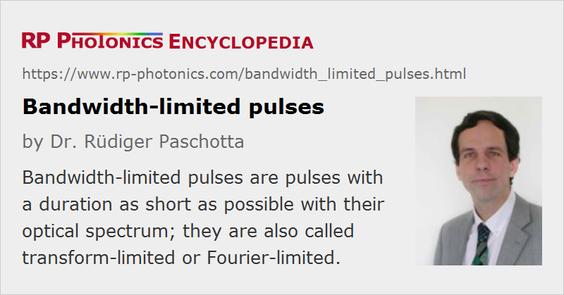

Bandwidth-limited Pulses
Definition: pulses with a duration as short as possible with their optical spectrum
Alternative term: transform-limited pulses
German: bandbreitebegrenzte Pulse
How to cite the article; suggest additional literature
Author: Dr. Rüdiger Paschotta
A bandwidth-limited light pulse (or transform-limited pulse) is a pulse which is as short as its spectral bandwidth permits. In other words, its time–bandwidth product is as small as possible for a given temporal or spectral shape For example, the minimum time–bandwidth product of sech2-shaped pulses is 0.315, which implies that bandwidth-limited sech2 pulses with a duration of 100 fs must have a bandwidth of 3.15 THz.
A slightly different definition for a bandwidth-limited pulse is that its peak power is as high as the optical bandwidth allows (for a given pulse energy). This is equivalent to the pulse having a flat spectral phase, but does not always precisely lead to the shortest possible pulse duration in terms of full width at half maximum.

If an initially transform-limited pulse propagates through a medium, its time–bandwidth product can increase due to the influences of chromatic dispersion or nonlinearities. For example, the influence of dispersion can temporally stretch the pulse while leaving its spectral width constant. This is associated with a chirp. This chirp can later be removed by dispersive pulse compression, restoring the original pulse duration.
Many mode-locked lasers, particularly soliton mode-locked solid-state lasers, but also some mode-locked diode lasers, can generate nearly bandwidth-limited pulses. This feature is very desirable e.g. in optical fiber communications, as it minimizes dispersive temporal broadening.
Questions and Comments from Users
Here you can submit questions and comments. As far as they get accepted by the author, they will appear above this paragraph together with the author’s answer. The author will decide on acceptance based on certain criteria. Essentially, the issue must be of sufficiently broad interest.
Please do not enter personal data here; we would otherwise delete it soon. (See also our privacy declaration.) If you wish to receive personal feedback or consultancy from the author, please contact him e.g. via e-mail.
By submitting the information, you give your consent to the potential publication of your inputs on our website according to our rules. (If you later retract your consent, we will delete those inputs.) As your inputs are first reviewed by the author, they may be published with some delay.
See also: time–bandwidth product, spectral phase, pulses, chirp, pulse compression, The Photonics Spotlight 2008-06-13
and other articles in the category light pulses
|  |
If you like this page, please share the link with your friends and colleagues, e.g. via social media:
These sharing buttons are implemented in a privacy-friendly way!